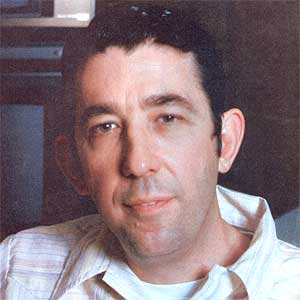
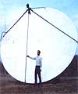
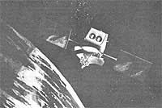
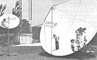

In this issue of MOTHER, our serialization of Four Arguments for the Elimination of Television comes to an end. There's no doubt that Jerry Mander's thinking has, as evidenced by mounds of correspondence, had a profound effect on thousands of MOTHER's readers, but many other good folks have written to maintain that we shouldn't confuse the medium with the message...that the biggest problem with TV is programming...and that television, as a people's medium, could be a source of positive good in the human community.
One such reader is Robert B. Cooper, Jr. Bob is a pioneer in developing technology for the home reception of satellite television, and he claims that the orbiting signal-bouncers offer a real chance for folks to take control of this country's major medium of entertainment and information. In order to explore his views on how television got to where it is-and to examine what can be done to remedy the situation-MOTHER staffer Peter Hemingson traveled to Cooper's Oklahoma home.
The edited transcript that follows-which summarizes more than five hours of discussion-presents a thoughtful alternative to Jerry Mander's call for the elimination of television. If Cooper is right-and many think that he is-the answer to our "television problem" may well be to expand the use of TV rather than do away with it.
PLOWBOY: Mr. Cooper, I certainly didn't have any difficulty spotting your home as I drove up. The tall radio towers in the back yard...the television antennas stacked on the roof of the house...and that big, white 20-foot dish antenna in the side yard make your place pretty hard to miss! You must have a doctor's degree in electrical engineering to operate all that equipment.
COOPER: No, I don't. My academic training is in broadcast journalism. Actually, I learned the electronics that I know working as an amateur radio operator when I was a boy...and my interest in television began about the same time.
Back in 1950-when my family lived in Ithaca, New York-television was something we'd only heard about. The nearest station was more than 100 miles away, and no one in town had a receiver.
Then one day my dad came back from a business trip with a little seven-inch-screen Hallicrafters TV tucked into his luggage...and I was hooked. Before long, we built a 100-foot antenna tower on our hilltop...and, every second Thursday, reception was good enough for us to see a misty Kate Smith singing about the moon coming over the mountain!
Since we were the only people in the county who had television, all the local radio dealers would use our antenna to test the latest videos...hoping to find one sensitive enough to sell in our area. Sometimes there were five or six TV's-all loaners-lined up in our living room. As you can imagine, I became totally immersed in the medium. Since that time I've never been very far away from television...and for the past 20 years, I've edited cable TV trade journals.
PLOWBOY: You've been quoted as saying that television programming may well be shameless and beyond defending. How did the situation get so bad?
COOPER: Well, to understand how we've ended up with what Nicholas Johnson the maverick former FCC commissioner-called "bubble gum for the mind", we need to review the history of the medium. The problem has technological, political, and economic roots...but the technology, of course, came first.
At the end of the Second World War, the Federal Communications Commission reevaluated the original standards it had set for television and decided to assign a certain block of frequencies in the VHF-or very high frequency-band to the service. The frequencies would-it was further planned-be broken up into 12 channels. Now, at the time, there were only two requirements for establishing a TV station: First, you had to have enough money to keep the station on the air while it was becoming established...and second, the channel that you picked for the station could not interfere with anyone's ability to receive other stations.
The engineering theory of the day said that TV signals could not travel for more than 50 miles. However, as new stations came on, reality soon caught up with theory. By 1948, the FCC was being swamped with complaints from angry viewers, each of whom had paid at least $300 for a television set that now, because of excessive interference, seemed useless. In response, the commission froze the number of authorized TV stations at 107-those that had already been approved and the freeze lasted until 1952.
PLOWBOY: Did the FCC take any steps to resolve reception problems at that time?
COOPER: Well, it considered a variety of proposals...but-in the meantime the stations that had been lucky enough to be licensed before their number was frozen became so firmly established that there was no way they could ever become threatened commercially. In a few cities, like New York and Los Angeles, there were competing stations...but most urban areas had just one television station, and some towns-such as Denver, Colorado and Portland, Oregon-had none at all.
PLOWBOY: It sounds as if a decision that had been made essentially for technological reasons had some pretty important economic results, as well.
COOPER: The effects were not only economic, but also political. The original 107 television stations quickly realized that they were enormously important to members of Congress, and that understanding soon led to the government's-including the FCC's-kid glove treatment of the interests of the existing stations. In fact, the commissioners eventually worked out a plan that was guaranteed to please only the established stations.
They decided that-because of technical limitations-12 channels of television were just not enough to give everyone in the country interference-free viewing. So they opened up what is now called the UHF-or ultra high frequency-band for television channels 14 to 83...and decided that, once the freeze was over, applications would be taken for both VHF and UHF stations.
PLOWBOY: That doesn't sound like a bad notion.
COOPER: It wouldn't have been, if anyone around at the time had had any experience with UHF. Unfortunately, there'd been almost no experimentation with ultra high frequency transmission at all. Nobody knew what would be required to build a UHF receiver-ordinary VHF machines couldn't receive UHF-and no one knew what was going to be involved in building UHF antennas, either! Worse yet, most cities were allotted just three VHF channels. Given the difficulties with UHF, the VHF allocation system practically guaranteed that there would be no more than three networks.
PLOWBOY: Didn't the FCC realize that it wasin effect-limiting television to three major sources of programming?
COOPER: Well, Dr. Allen B. Dumont-a television pioneer who developed the mass production picture tube and who had a five-station network that was as big as CBS in 1950-testified that the FCC was making a big mistake in its channel allocation program. Dumont knew UHF wouldn't be able to compete with VHF. He predicted that network affiliations would go to the stations that people could receive on their existing receivers, and that most UHF stations cut off from the major sources of programming and stuck with weak signals that almost nobody could receive-would fail. And he was right. Something like 400 UHF stations were built and put on the air in the early fifties...but hardly any of them managed to succeed.
Dumont actually believed in UHF, but he saw that it would be fatal to the new service if the FCC allotted both VHF and UHF channels to one city. He suggested that, when there wasn't room for several VHF stations in a city that already had one pre-freeze station, then all that area's broadcasters-including the pre-freeze station-should be moved to UHF. Under such a system, one station wouldn't have had any inherent advantage over the others.
Dumont lost...and he became so angry as a result that he closed his network down!
PLOWBOY: With so many UHF stations coming on the air and then failing, many people must have wasted money buying adapters and antennas that soon proved useless.
COOPER: Yes, but even though the monetary losses were enormous, other losses to the viewing public were even greater...because we lost our chance to have truly local television.
PLOWBOY: And that loss had programming implications, too.
COOPER: Of course it did. Because we're limited to controlled, network-centered broadcasting, we have to suffer such insanities as having a program canceled even when it's drawing twenty million viewers. If you look at the top programs, you'll see that-with the occasional exception of the Super-bowl or a hit movie their ratings are separated by miniscule amounts...fractions of a point. Often there's a difference of just a few million viewer-homes between the highest- and the lowest-rated programs that are on the air in the same time slot...but the show that's third is going to get canceled.
PLOWBOY: And once the ratings became all that mattered, the quality of the programs began to decline.
COOPER: Sure. If millions of folks can be disenfranchised by programming decisions, simply because they're slightly in the minority, then the networks have to make sure that they attract a clear majority with their shows. And the easiest way to do that is to reduce the quality of the programs...to shoot for the lowest common intellectual denominator.
PLOWBOY: Isn't there any way out of the ratings bind?
COOPER: If you take the technical problems caused by the fact that there are a limited number of channels available in any given area, and add to those hassles the sheer economic and political power of the groups that control the channels, you'll see that the system we have today is about all we can expect from the "public" airwaves. However, there'd clearly be room for additional competition, if only there were spectrum space available to the competitors.
PLOWBOY: Doesn't cable television offer such space?
COOPER: In many ways, it does. Cable or CATV-was developed to distribute over-the-air television signals to areas that couldn't get adequate reception.
It began when some local entrepreneur raised a community antenna-sensitive enough to pick up a distant signal-on the highest hill in town, and then ran the signal to subscribers through a cable. You know, the earliest cable systems probably were the perfect embodiment of American ingenuity...but nobody liked them except the subscribers. The broadcasters and movie theater owners feared cable terribly...and such people reacted by harassing the community antenna companies in every way possible.
PLOWBOY: Cable must have appeared to be pretty potent competition!
COOPER: Well, it didn't look imposing right away. Remember that-after the freeze was over the typical FCC allocation for a good-sized city was three commercial VHF channels, one reserved educational channel, and some UHF frequencies. When cable first came along, it simply extended the reach of the existing stations, making it possible to get television on the west side of a mountain, for instance, as well as on the east side.
Until the late 1950's, cable could deliver only three channels...and that usually meant that the nearest network stations were piped in. But then a clever engineer came along and discovered a way to deliver jive channels on the cable. Most cities didn't have independent stations to fill the vacancies, so the cable companies often brought in more network stations from a different market.
By the early 1960's, it was technically possible to bring 12 channels of television into homes with the cable...and people in that business knew they'd better find some way other than more network duplication-to fill those channels. Cable systems that were within reach of independent stations added them to the menu...and isolated CATV systems got together as groups and built microwave relays to send distant independent signals from Los Angeles to as far as El Paso, or from New York to Ohio.
PLOWBOY: It sounds as if they'd found a way to break the network bottleneck!
COOPER: Yes, they had. The cable operators, through their own creative ingenuity, had done what the FCC had been incapable of doing back in 1952...they had created diversified programming.
PLOWBOY: And then the big broadcasters began to howl?
COOPER: Yes, that's right. When CATV started to pipe in distant independent signals, the considerable political clout of the broadcasters who now numbered something like 650 VHF stations-was brought to bear on the FCC.
Take, for example, the case of cable TV in Santa Barbara, California. The western city had been allocated just one VHF (network) channel. Santa Maria, up the coast, was also given a VHF outlet. On paper, the two cities constituted a combined market. Unfortunately, however, about half the people in Santa Barbara lived "over the hill"-surrounded by geographical barriers-and couldn't receive the Santa Maria station...and about 90% of the people in Santa Maria were unable to see the Santa Barbara transmissions. In other words, comparatively few homes could receive both the CBS and ABC stations.
So a CATV firm wired Santa Barbara with a modern 12-channel cable system, and-to fill the extra spaces on the dial it"imported" the signals of independent Los Angeles stations. The broadcasters complained to the FCC that the cable company was giving people a choice of programming in Santa Barbara...and claimed that the VHF station in the California town would soon be forced off the air as a result.
PLOWBOY: What happened?
COOPER: The FCC ruled that it had no right to regulate cable TV. As for the "threat" posed by that particular cable system...here it is 1980, and Santa Barbara's television station is still very much on the air.
PLOWBOY: Why hasn't cable become more of an alternative to broadcast television, then?
COOPER: Well, the nature of cable ownership changed substantially during the 1960's. The industry had originally been made up of mom and-pop kinds of businesses, locally owned and operated. But when the broadcasters and others saw the multi-channel capability that cable offered, they began buying up the systems.
Teleprompter, one of the first such super-companies, introduced the concept of maintaining corporate headquarters in New York and sending managers into the field to supervise local companies. So CATV became absentee-owned and absentee-operated...and it became a big business with large amounts of money behind it.
PLOWBOY: That couldn't have made the broadcast people feel very secure.
COOPER: It didn't ... and I always blame the greed of the large cable operators-with their glittery press agent releases-for what happened to CATV The
FCC jumped on it with both feet.
PLOWBOY: But I thought the FCC had ruled that it had no jurisdiction over cable.
COOPER: It did so rule... several times. But the broadcasters kept complaining and exerting political pressure...and finally, in 1968, the FCC decided to study the question again. A commission attorney came up with a phrase in the Communications Act of 1934which is the FCC's charter-stating that the commission had the right to regulate broadcasting and those things that are "ancillary" to broadcasting. The FCC decided that the wording did put cable systems under its jurisdiction...and set out to look for a test case.
The city of San Diego must have come immediately to mind. It was just out of reach of television signals from Los Angeles, and local cable companies-there were perhaps 10 or 12 of them active in town-were piping in independent television signals from the city to the north. The FCC ordered the CATV companies to stop laying cable while the importation question was decided. In response, the cable companies challenged the FCC's right to regulate them...and the case landed in Federal Court. The commission won the case, and its lawyers began issuing a set of rules for the cable companies.
PLOWBOY: What did those directives-cover?
COOPER: The new regulations aimed to control the level of competition that CATV could offer to broadcast television. A cable company in Dallas, for example, could carry three network stations, a PBS station, and three independents...while a similar company in Boseman, Montana could offer the four networks and only one independent channel. The theory was that if the people of Boseman had too many television channels to choose from, they wouldn't watch the local station...and the hometown broadcaster would be forced out of business.
PLOWBOY: But no mandate in the FCC charter states that it's the commission's job to protect the economic interests of a licensee!
COOPER: Right. The 1934 Communications Act says that the commission must provide the widest possible access to broadcast services for all the people of the United States...at the most reasonable cost, and free of interference. That is the only Congressional mandate.
PLOWBOY: Then how did the FCC get involved in economic protectionism?
COOPER: Federal agencies operate on what is termed "case law". They have administrative judges who adjudicate challenges to the rules, and the decisions of those justices have the full weight of law. In the question of whether it could act to protect the financial interests of licensees, the FCC went to the "Carroll Doctrine", which had-back in the early fifties-come out of the desire of a new radio station to enter a market where two stations were already broadcasting. The administrative law judge held-in that case-that the application for a license should be denied because of the economic harm the new station might do to the established ones.
So the commission cited the Carroll Doctrine as a justification for protecting the economic well-being of broadcasters. In the case of CATV, the FCC said that as long as a supplemental service such as cable was not available to everybody, it was within the commissioners' mandate to insure that broadcast stations-which are available to all should be allowed to survive.
PLOWBOY: And so CATV-stifled by the opposition of the broadcasting industry and the regulations of the FCC-never really achieved its promise as "people's television". Is there anything else that can fill such a role?
COOPER: There may be. Perhaps today's technology is providing us with another chance to create a real national television service...one that will fill the needs of minorities and the majority alike. Satellite television may well be the answer.
PLOWBOY: How does satellite TV work?
COOPER: Way back in 1945, an Englishman named Arthur C. Clarke-who's a well-known science fiction writer, by the way-had a revolutionary idea. Clarke realized that if a television transmitter could be rocketed far above the earth and placed precisely over the equator at a height of 22,300 miles...the station could be locked into synchronization with the earth's rotation, and would always appear to "hover" above the same spot on earth.
From its geostationary vantage point, such a transmitter could reach 40% of the surface of the earth with television signals. As just about any schoolchild knows, the first satellite of this kind was put into orbit back in 1963...and today there are eight operating communications "moons" whose signals are covering North America alone.
PLOWBOY: Are all of these satellites broadcasting television now?
COOPER: Each one has the capability to do so...but at this time, not all the channels are being used for television. The satellites, you see, are just giant relay stations in the sky. A signal is sent up to the "bird" from a transmitting antenna on the ground...the satellite receives the signal...amplifies it...and sends it winging back to earth.
The process works fine for television, and equally well for other forma of communication...so telephone calls, for example-and computer data streams-occupy some of the channels. There are plenty of bands left for TV, though. In fact-during peak periods-the orbiting transmitters are offering about 60 channels' worth of television.
PLOWBOY: I guess this is the time to ask, "Offering what . . , and to whom?"
COOPER: That's a good question. If the satellites transmitted nothing but the same old network programming, they would appeal only to technology lovers. But there's a good deal more coming down out of the sky than video pap. As an example, after the CATV companies were stymied by the broadcasters and the FCC in cable's attempt to offer widely diversified programming, they turned to providing their own schedules...of shows not controlled by the FCC. That's where the satellites came in. In 1976, an adventurous cable programming firm called HBO-Home Box Office-rented a channel on a satellite and began sending movies, sporting events, and entertainment specials to CATV systems across the country.
PLOWBOY: Wasn't that considered "importing a distant signal" by the FCC?
COOPER: No, and for a very good reason: Satellite television is what's known as "common carrier service", and isn't classed as "broadcasting". In common carrier-by the way, that's what your telephone service is-the satellite owner simply leases relay facilities to any and all comers. Any signal sent over a common carrier is treated as a private message between the sender and the receiver...not as a broadcast that's available to everyone. Therefore, common carrier transmissions are not subject to FCC broadcasting regulation.
PLOWBOY: I can see that there would be both positive and negative aspects to the common carrier nature of satellite transmissions.
COOPER: You're right. First, let's take the pluses. Anyone can walk into the office of RCA-which owns the SATCOM satellites-and order an hour of time on a bird. As long as there is time available and you have the money to pay the fee, RCA must sell you that hour. Now many of the satellite users are companies like HBO, which are transmitting programming to cable companies. Others are innovators like Ted Turner, owner of Atlanta's WTBS-TV. Turner took a small local UHF station, put it up on the satellite, and created America's first national television station...or superstation.
PLOWBOY: That's all fine for folks who are interested in traditional programming, but you said something that I think may be very important: Anyone can buy satellite time?
COOPER: That's correct...and now you're onto the key fact about satellite television. You see, the birds can break the bottleneck created by the FCC channel allocations table way back in 1952. And they're the moat economical transmission systems yet devised to send pictures and sound across the continent.
PLOWBOY: Economical?
COOPER: Absolutely! The rates are determined by the company that owns the satellite. Because there are three companies with satellites up there-the AT&T/GTE group, Western Union, and RCA-there's a lot of competition...and the charges reflect that happy state. In the past two or three years, the cost of transmitting programs via satellite has just fallen through the floor. I purchase a full hour at noon-once a week-for $40! And, for that fee, I get an hour of time in which I can send a full television program to as many people as tune in to it. Now, to be totally accurate, there are some supplemental charges. I've got to pay whatever uplink station sends my program to the satellite...that's another $40.
And if my program is on video tape, the station operators will charge me a further $10 or $15 to play it on their machine. So the total coat is more like $100 for an hour's time, whether you have an audience of one, or one million, or a hundred million.
PLOWBOY: The possibility of reaching that many people for that little money is really revolutionary!
COOPER: Absolutely! I think that anyone with a specialized interest-no matter what it might be-could use satellite transmission to share his or her information with others. Portapaks, and other low-cost home-type video gear, are readlly available...you can buy or rent the equipment, and local colleges often let folks use their facilities.
As long as you realize that what you're trying to do is not to entertain America, but to communicate information. . . you don't have to worry about whether or not you can superimpose one image over another, or do split screens, or any of the other fancy production things that we've come to believe are absolutely necessary for television.
PLOWBOY: The potential for communicating through satellite seems to be enormous, but how do folks actually receive the signals?
COOPER: There are at least three ways they could do so. First, many cable systems pick up programming from the satellites. My hourly program runs on something called SPN, or Satellite Programming Network, which is available to cable systems free of charge. Now since CATV has plenty of channels to fill, it likes to have inexpensive or free programming to add to the menu it can offer customers.
Second, I've proposed that libraries are the logical place for people to get together for classes via satellite television. There's no reason why such institutions couldn't be equipped with TVRO's-Television Receive Only terminals-and videotape equipment. Then, if you wanted to take a course in basket-weaving, for example, you could just go to the local library on Thursday nights at eight and view the instruction...and if those evenings weren't convenient, you could see the tape of the program later!
PLOWBOY: How would the show's originators be reimbursed for their satellite expenditures?
COOPER: Well, one easy way would be to sell a manual or a workbook to accompany the visual instruction. You wouldn't have to market many copies to cover the costs of production and transmission.
PLOWBOY: But there are a lot of households that aren't served by cable, and the library idea-although it sounds great would take a while to organize. What's the third way for folks to see these satellite transmissions?
COOPER: Something that should be close to the hearts of MOTHER's readers: doing it yourself.
PLOWBOY: Is that possible?
COOPER: Increasingly so, yes. Equipment prices have been falling dramatically. Back when HBO first started sending out programming by satellite-in 1975-the price tag for a one-channel receiver was $125,000. But today-in early 1980-a 24-channel TYRO runs between $12,000 and $18,000! Of course, that's for a commercial rig. You could get an individual setup that would deliver perfect pictures for between $7,500 and $10,000...installed.
PLOWBOY: That's certainly less than $125,000...but it's still a huge amount of money.
COOPER: Agreed. But that's not the end of it. If you're willing to install the equipment yourself-and anybody who ever put a child's swing set together could do so-you can figure on paying about $3,500 for the components. That's right now... by next winter, the price could well be below $3,000.
Of course, anyone who has a little electronics savvy can beat even that price by a mile. Someone who's been an amateur radio operator, or repaired television sets, or built a fairly complicated Heath kit could assemble a home satellite terminal for between $700 and $800...in about 60 fairly leisurely hours of work.
PLOWBOY: Just what equipment is involved in a home satellite receiver?
COOPER: The parts are the same, no matter what the price. There are three basic elements: the antenna, a signal booster called a low noise amplifier-or LNA-and the receiver. The antenna that's most often used is called a parabolic...that's the big white dish out there in my yard. The bigger the dish, the more signal it can gather.
In most parts of the United States, a parabolic of 10 feet in diameter is adequate...but in some areas a larger dish might be necessary. The antenna focuses the satellite signal onto the LNA...which is mounted outdoors, attached to the dish. The low noise amplifier takes that very weak satellite signal which started out at only five watts and has traveled over 22,000 miles!-and boosts its strength. Then the signal goes into the house, over a special coaxial cable, to the receiver...where it is changed from a microwave frequency down to a "baseband" signal that your home television set can accept.
PLOWBOY: What is the incentive for folks to go out and spend even $800 on television equipment?
COOPER: Well, there are still some people in areas that just can't get any television reception at all. Back in 1975, Tennessee's Senator Baker commissioned a TV study from the Denver Research Institute. The group was to find out how many American homes could receive no television whatever...could receive only one station...could receive no more than three stations...and could receive fewer than five stations. The Institute discovered that-in 1975-there were slightly over 1,000,000 homes that couldn't receive any television at a11. And there were 22,000,000 homes that got fewer than five channels.
Satellite television can make small cable TV systems possible for such folks in remote parts of the country. Once the satellite terminal is installed, the price of distributing the signal to a few friends and neighbors is relatively small...and the costs of the TVRO could even be shared among several families.
PLOWBOY: What about the folks that do receive a wide range of broadcast television? Why would they want satellite reception?
COOPER: Well, as the cable people quickly learned, quantity is no guarantee of either diversified programming or of quality. There's a lot of good material that's available only from the satellites: sports and first run movies...independent programming from Atlanta, New York, Chicago, and San Francisco...religious broadcasts...news from Canada in both French and English...news from Mexico City !n Spanish...a 16-hour-a-day children's service called Nickelodeon...and so forth.
PLOWBOY: It certainly sounds as if satellites could provide a wonderful alternative to standard television. Are there any drawbacks to their use?
COOPER: Just a few. Do you remember when we discussed the common carrier nature of satellite transmission?
PLOWBOY: That's the classification that essentially glues anyone with $100 in his or her jeans the right to put a program on the satellite for an hour.
COOPER: Right. That's the great advantage of common carrier service. The disadvantage, is that there's some uncertainty as to whether anyone can legally watch a transmission in common carrier service without the permission of the originator.
PLOWBOY: Whoops! That could really put the skids under a great idea.
COOPER: Yes and no. There are four categories of programmers using the satellites. First are the outifts, like HBO, that are in the business of distributing programming-for a price-to the CATV companies. The cable companies call this "premium service". . . which means that they charge a fee-in addition to the basic cable price-to provide those programs to their clients.
Companies like HBO claim that-because of the nature of the contracts they have with the suppliers of the movies they distribute-they cannot grant you individual authorization to watch their signals. Now this doesn't mean that you can't physically receive HBO's signal if you set up your own equipment...just that it's illegal to do so. Of course, it would be exceedingly difficult to catch someone watching HBO without authorization...and many people take the attitude that "if they don't want me to see their transmissions, just let them keep their darned photons out of my yard"!
PLOWBOY: Couldn't HBO scramble or encode its signal?
COOPER: Yes, and it may well soon take that route. The second category of programmers consists of those who make a direct, but modest, charge for permission to watch...some folks doing "Vertical-or special-interest" programming, for example, might choose to impose a modest fee to help defray their expenses. The cost of such permission ranges from one cent a month-that's right! -to receive the gavel-to-gavel coverage of the U.S. House of Representatives, to the almost $100 a year billed by some premium services.
PLOWBOY: What's the third category?
COOPER: It's made up of those people whose transmissions are completely free, broadcasters who want as many people to watch as possible! The channels transmitting religious programming fall into this group, as does the Satellite Programming Network. It's a good idea to get a letter of permission from these folks anyway...in a sense, doing so will validate your having that funny-looking dish antenna out in your side yard. As a matter of fact, we routinely grant letters of permission for people who want to watch our weekly program.
PLOWBOY: Sounds like you've covered just about everything.
COOPER: Not quite...there's a fourth category, and it's a complicated one.
Among those who use the satellites as common carriers are regular broadcasting organizations. The networks use satellite transmission for their news feeds, some of which they pass on "live"...but much of that information is sent to New York, where 40 minutes' worth may be edited down to perhaps 40 seconds for the nightly news.
Now such "raw" material is intended for a very limited audience...and it should be almost as private as a telephone conversation. Certainly none of it is broadcast television in any sense of the word. To my mind, nonbroadcast signals are the ones that the 1934 Communications Act meant to protect when it addressed common carrier service: In this case there is a question of privacy of communication. Unfortunately, as you tune from one satellite transponder to another, you can find "privileged" communications right next to WGN in Chicago or to HBO.
PLOWBOY: How do you expect the permissions question to be settled?
COOPER: The relevant law is Section 605 of the Communications Act of 1934, which says that no person who happens to intercept a common carrier communication shall use it "for his own benefit or the benefit of another not entitled thereto". "Benefit" is a quibble word...and I expect that sooner or later somebody is go. Ing to test the law in court. I will say this, though: The tolerance of the entire industry that has grown up around scanner radios-which are designed to intercept any kind of VHF or UHF transmissions, including the common carrier ones-has greatly weakened the case for restricting satellite reception. There are four or five million "scanners" in use right now that have been sold openly in the stores...and such sets are busy receiving common carrier police and fire department transmissions that are clearly not public broadcasts.
PLOWBOY: So you're optimistic that the legal questions will be resolved?
COOPER: Oh, yes...and remember that there are no problems with many satellite transmissions.
PLOWBOY: How would you sum up the promise of satellite television, then?
COOPER: I think that the birds have revolutionized communications. For the first time since the very beginning of television, there are enough channels-open to all the people to meet our communications needs. The technological bottleneck of channel allocations has been broken...the economic hurdle of big money network control has been bypassed...and I think that we stand on the verge of having a real "people's television" at last.
|
 The geostationary satellites-powered by solar panels-relay TV signals back to earth. |
Cooper's two children in 5- and 20-foot-diameter parabolic television antennas. |
 |
|
|
 |
 |